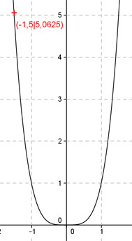

Aufgabe 72 Bestimmen Sie n so, dass eine Funktion der Form y = xn durch den Punkt (-1,5|5,0625) geht. Punktkoordinaten eingesetzt: x = -1,5 , y = 5,0625 5,0625 = (-1,5)4 Mit 5,0625 = (-1,5)n (-1,5)4 = (-1,5)n Exponentenvergleich : n = 4 y = x4 